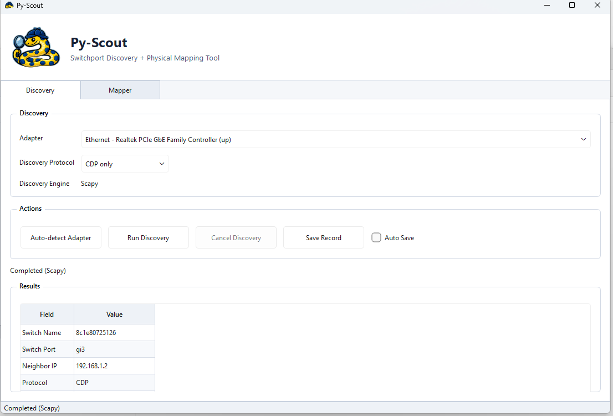
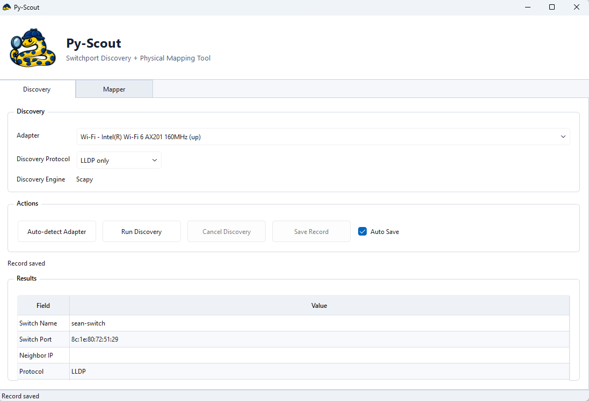
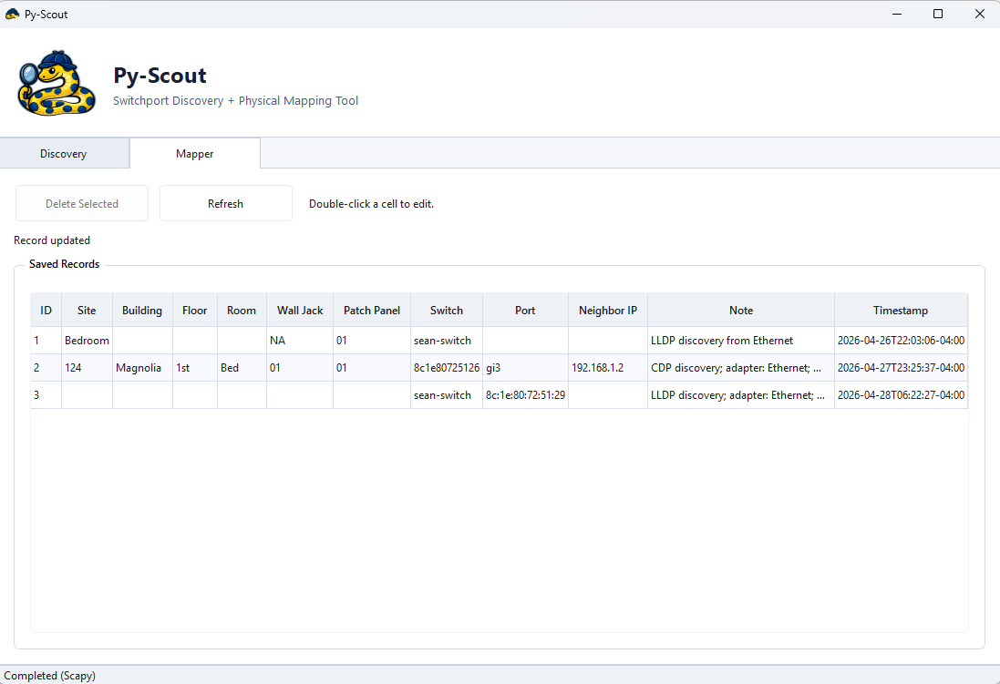

Switchport discovery
Identifies the connected switch and interface using LLDP/CDP.
Windows switchport discovery
Plug into any network drop, run PyScout, and see the connected switch and port in seconds.
Built for access-layer troubleshooting, jack tracing, and physical network documentation.
Switch: MDF-SW01
Port: Gi1/0/24
IP: 10.16.1.45
Protocol: CDPField result
The point is not more data. The point is the right data first.
Features
Identifies the connected switch and interface using LLDP/CDP.
Save switchport-to-location mappings for wall jacks, patch panels, and field notes.
Quickly scan a local subnet for basic device visibility.
Shows useful results without raw packet dumps or manual parsing.
Use Cases
Screenshots



Requirements
PyScout depends on discovery advertisements from the connected access switch.
Build
python -m unittest discover
python -m compileall pyscout
.\build.ps1